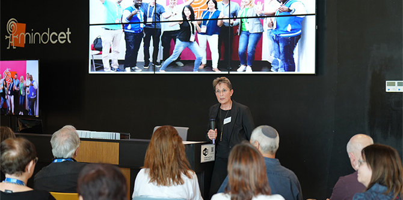
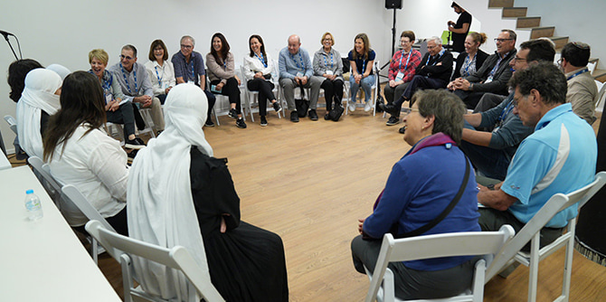
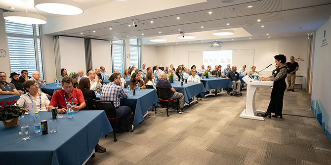
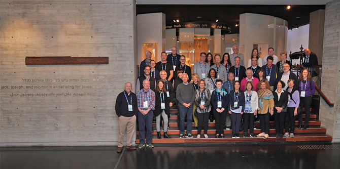
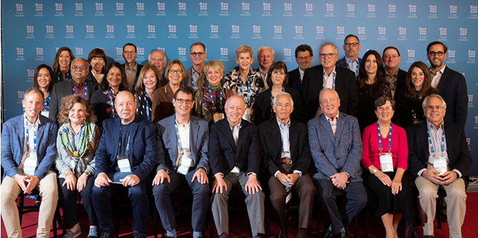

באמצע נובמבר אירחה קרן מנדל-ישראל את חברי הוועד המנהל של קרן ג'ק, ג'וזף ומורטון מנדל ואת חברי הדירקטוריון של פארקווד (תאגיד הנאמנות הפרטי של מנדל) לביקור בן שבוע בישראל. הביקור החשוב הזה, הראשון מסוגו, הביא לידי מימוש את אחת ההחלטות האחרונות של מורטון מנדל כיו"ר וכ-C.E.O של קרן ג'ק, ג'וזף ומורטון מנדל.
במהלך הביקור נפגשו חברי הוועדים המנהלים עם בוגרים, עמיתים וחברי סגל של תוכניות המנהיגות של קרן מנדל-ישראל וראו את הדרכים שבהן פעילותה ותוכניותיה משפיעות על החברה הישראלית ומסייעות להתמודד עם רבים מאתגריה. הם אף פגשו כמה מן המנהיגים הבולטים בישראל וביקרו בכמה מהמוסדות שקרן מנדל מסייעת להם.
האורחים בילו יום באזור הנגב, שם למדו על תוכניות מרכז מנדל למנהיגות בנגב ופגשו את חברי הסגל וכמה מבוגרי המרכז. במסגרת סיור זה ביקרו בשני אתרים מרכזיים במימון קרן מנדל: מידבריום – פארק בעלי החיים ע"ש ג'ק, ג'וזף ומורטון מנדל, שנמצא כעת בבנייה, ו-MindCET – מרכז החדשנות ע"ש ג'ק, ג'וזף ומורטון מנדל – פארק האד-טק הראשון בישראל. כמו כן סיירה הקבוצה באחת מהשקעות מנדל בישראל: מפעל הזכוכית פניציה – מפעל הזכוכית היחיד בישראל ומקור תעסוקה ופיתוח חשוב באזור. הקבוצה נפגשה גם עם ראש עיריית באר שבע וראשת עיריית ירוחם, ועם אנשי מפתח ברשויות המקומיות.

ביקור ב MindCET (צילום: סימנים)
ביום אחר של הביקור סיירו האורחים בצפון הארץ, כדי להכיר את מרכז מנדל למנהיגות בצפון, ובו נפגשו עם כמה מן הבוגרים. עוד לפני כן סיירה הקבוצה בבסיס חיל האוויר פלמחים ולמדה על יוזמותיהם בעלות ההשפעה של בוגרי תוכנית מנדל למנהיגות חינוכית בצה"ל. בסיום היום ביקרו בחוות השומר, שם נפגשו עם קצין החינוך והנוער הראשי בצה"ל ולמדו על בסיס הכשרה ייחודי זה, המעניק לחיילים בעלי קשיי הסתגלות את הכישורים והמוטיבציה הדרושים להם לשם שירותם הצבאי ולמען השתלבות בחברה הישראלית.
 מפגש עם מאיסה אלשיך, בוגרת מרכז מנדל למנהיגות בצפון (צילום: סימנים)
חלק גדול מהביקור התמקד בירושלים. חברי הוועדים המנהלים סיירו בבית קרן מנדל החדש, שנפתח ב-2020, וביקרו בגן הבוטני האוניברסיטאי הסמוך, ובו "דרך האלונים" על שמו של מורטון מנדל. הקבוצה פגשה גם את הסגל והעמיתים של בית ספר מנדל למנהיגות חינוכית ושל מכון מנדל למנהיגות, וכן את סגל יחידת בוגרות ובוגרי מנדל.

מפגש עם הסגל והעמיתים של מכון מנדל למנהיגות (צילום: סימנים)
האורחים ביקרו גם בכמה אתרים ומוסדות חשובים בירושלים שהוקמו בזכות תרומות נדיבות של קרן מנדל: בניין ג'ק, ג'וזף ומורטון מנדל החדש וקמפוס "בצלאל אקדמיה לאמנות ועיצוב ירושלים", אשר ישרת 2,500 סטודנטים לאמנות וצפוי להפוך את מרכז העיר ירושלים למרכז של חיי סטודנטים. הם ביקרו גם במוזיאון ישראל, שם סיירו באגף לאמנות ותרבות יהודית ע"ש ג'ק, ג'וזף ומורטון מנדל. באוניברסיטה העברית בירושלים ביקרו בבית ספר ג'ק, ג'וזף ומורטון מנדל ללימודים מתקדמים במדעי הרוח וציינו 20 שנה למרכז המחקר מנדל סכוליון.

סיור באגף לאמנות ותרבות יהודית ע"ש ג'ק, ג'וזף ומורטון מנדל במוזיאון ישראל (צילום: סימנים)
גולת הכותרת של הביקור הייתה קבלת פנים במשכן הנשיא בירושלים והפגישה עם הנשיא יצחק הרצוג ורעייתו מיכל. האורחים השתתפו גם בחנוכה של רחבת מורטון ל' מנדל החדשה – אירוע שנערך על-ידי עיריית ירושלים והקרן לירושלים שבו השתתף ראש עיריית ירושלים משה ליאון. הרחבה, הממוקמת באתר מרכזי סמוך לטחנת הרוח ההיסטורית של מונטיפיורי ומשקיפה על העיר העתיקה בירושלים, הוקמה בהוקרה על תמיכתו הפעילה של מורטון מנדל בישראל ועל הסיוע הנרחב של קרן מנדל במוסדות וביוזמות ברחבי ירושלים.
 הפגישה עם הנשיא יצחק הרצוג ורעייתו מיכל (צילום: סימנים)
הפגישה עם הנשיא יצחק הרצוג ורעייתו מיכל (צילום: סימנים)
הביקור הקצר והמרוכז נערך במקביל לטקס סיום תוכניות מנדל לשנת 2022, שבו חגגו את סיום לימודיהם 200 בוגרי עשר תוכניות המנהיגות של קרן מנדל-ישראל.
 האורחים בטקס סיום תוכניות מנדל לשנת 2022 (צילום: סימנים)
-
ביקור ב MindCET (צילום: סימנים) -
מפגש עם מאיסה אלשיך, בוגרת מרכז מנדל למנהיגות בצפון (צילום: סימנים) -
מפגש עם הסגל והעמיתים של מכון מנדל למנהיגות (צילום: סימנים) -
סיור באגף לאמנות ותרבות יהודית ע"ש ג'ק, ג'וזף ומורטון מנדל במוזיאון ישראל (צילום: סימנים) -
הפגישה עם הנשיא יצחק הרצוג ורעייתו מיכל (צילום: סימנים) -
האורחים בטקס סיום תוכניות מנדל לשנת 2022 (צילום: סימנים)
{kind=link}
{kind=link}
{kind=link}
{kind=link}
{kind=link}